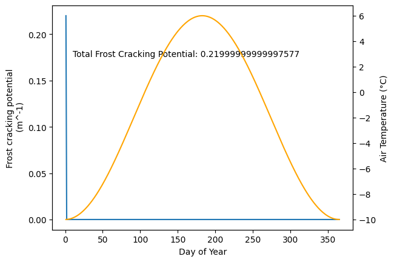

A frost cracking example code#
import numpy as np
import matplotlib.pyplot as plt
---------------------------------------------------------------------------
ModuleNotFoundError Traceback (most recent call last)
Cell In[1], line 1
----> 1 import numpy as np
2 import matplotlib.pyplot as plt
ModuleNotFoundError: No module named 'numpy'
We are interested modeling the diffusion of heat in to rock. To do this we need to set some parameters about the rock and the climate.
###########################
### physical parameters ###
###########################
α = 0.001
MAT = 0. # Mean Annual Air Temperature
Tₐ = 12 # half of the annual temperature variation
py = 365 # 365 days per year
Next, we need to define some of the numerical parameters that are needed to run the model.
##############
### set up ###
##############
time_pts = [1, 91, 183, 273] # Time points we are interested in (julian days of year)
depths = np.flip(np.arange(0, 2.01, 0.001)) # Depths that we want to examine
all_days = np.arange(1, 366) # Days that we are intested ing.
crack_rng = [-3, -8] # Range of temperature where most cracking occurs.
Finally, we need to define a function where the physics is included
def T(z, t):
return MAT + Tₐ * 10**(-z * np.sqrt(np.pi / (α * py))) * np.cos((2 * np.pi * t / py +np.pi) - z * np.sqrt(np.pi / (α * py)))
Now, let make a plot of it.
plt.figure("temperature plot")
plt.clf()
# Plot seasonal temperature variations
plt.plot(T(depths, time_pts[0]), depths, label="winter")
plt.plot(T(depths, time_pts[1]), depths, label="spring")
plt.plot(T(depths, time_pts[2]), depths, label="summer")
plt.plot(T(depths, time_pts[3]), depths, label="autumn")
# Highlight frost cracking range
plt.axvspan(crack_rng[1], crack_rng[0], alpha=0.5)
plt.text(crack_rng[1], 1, "frost cracking\n range")
plt.ylim([2, 0])
plt.xlabel("Temperature (°C)")
plt.ylabel("Depth (m)")
plt.legend()
<matplotlib.legend.Legend at 0x7d82142557d0>
Now you can play with some of the parameters. What happens when the temperature is 2 degress colder? or the annual temperature variation is half of the original value
α = 0.001
MAT = -1 # Mean Annual Air Temperature
Tₐ = 12 # half of the annual temperature variation
Tₐ = 12/2 # half of the annual temperature variation
plt.figure("temperature plot")
plt.clf()
# Plot seasonal temperature variations
plt.plot(T(depths, time_pts[0]), depths, label="spring")
plt.plot(T(depths, time_pts[1]), depths, label="summer")
plt.plot(T(depths, time_pts[2]), depths, label="autumn")
plt.plot(T(depths, time_pts[3]), depths, label="winter")
# Highlight frost cracking range
plt.axvspan(crack_rng[1], crack_rng[0], alpha=0.5)
plt.text(crack_rng[1], 1, "frost cracking\n range")
plt.ylim([2, 0])
plt.xlabel("Temperature (°C)")
plt.ylabel("Depth (m)")
plt.legend()
<matplotlib.legend.Legend at 0x7d820feae090>
Next we want to define how much frost cracking could occur over a year.
def frost_efficiency(depths):
frost_crack_pot = np.zeros(365)
for i in range(365):
for j, depth in enumerate(depths):
temp = T(depths[j], i + 1)
if crack_rng[1] < temp < crack_rng[0]:
frost_crack_pot[i] += (depths[1]-depths[2])
return frost_crack_pot
α = 0.001
MAT = -2 # Mean Annual Air Temperature
Tₐ = 8 # half of the annual temperature variation
frost_crack_pot =frost_efficiency(depths)
plt.figure("seasonal potential")
plt.clf()
# Plot frost cracking potential
plt.plot(all_days, frost_crack_pot)
plt.xlabel("Day of Year")
plt.ylabel("Frost cracking potential\n (m^-1)")
plt.text(10, 0.8 * np.max(frost_crack_pot), f"Total Frost Cracking Potential: {np.sum(frost_crack_pot)}")
# Plot air temperature on a secondary y-axis
ax2 = plt.twinx()
ax2.plot(all_days, T(0, all_days), color="orange")
ax2.set_ylabel("Air Temperature (°C)")
plt.show()
